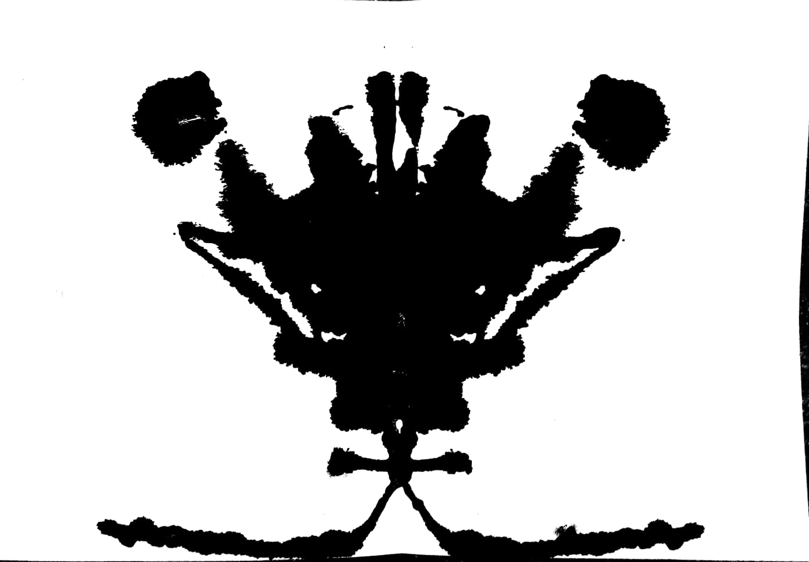
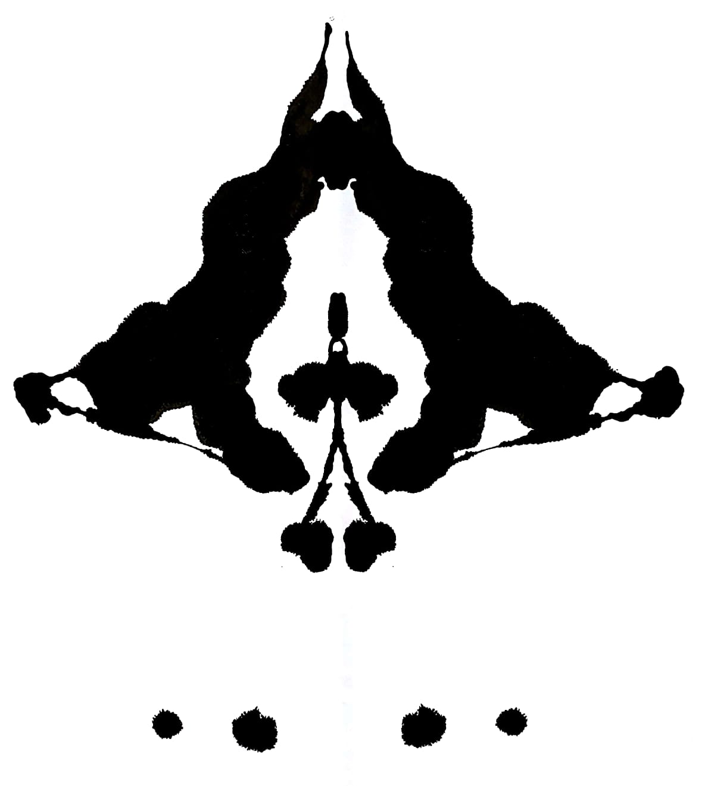

Rorschach
Art-Tech jerusalem hackathon | 2018


A Unity-Vuforia AR app that auguements Rorschach styled images. The animations are based upon data about mental hospital patients and their release patterns. Download the android app here, and point your camera at these images.